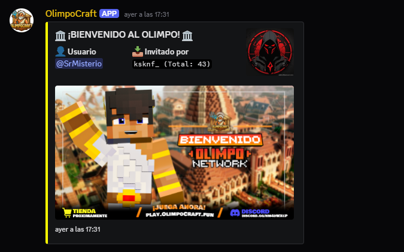
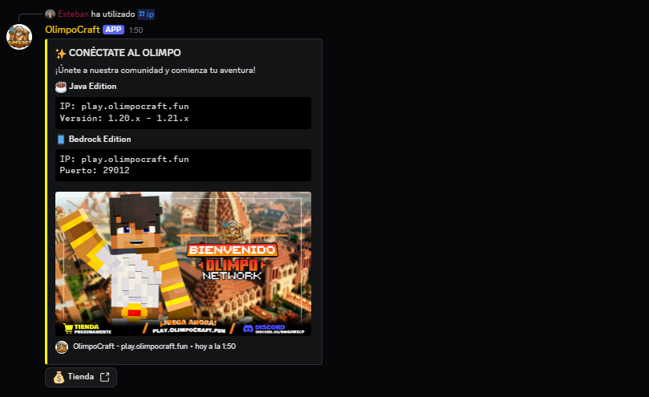

Discord Bots
Arquitectura robusta para grandes comunidades.
Desarrollo bots de alto rendimiento escalables con Discord.js v14, enfocados en la experiencia del usuario a través de Slash Commands, sistemas de economía y paneles de administración dinámicos.


UI en Discord
Implemento el uso avanzado de Modals, Select Menus y Botones interactivos para que la gestión de tu servidor sea visual y sencilla, eliminando la necesidad de comandos de texto complejos.
Persistencia de Datos
Integración con bases de datos SQL o NoSQL para sistemas de niveles, advertencias de moderación y registros de auditoría en tiempo real que no se pierden al reiniciar.
Handler de Comandos
const client = new Client({
intents: [GatewayIntentBits.Guilds]
});
client.commands = new Collection();
const cmdData = new SlashCommandBuilder()
.setName('setup')
.setDescription('Inicia el panel');
await client.rest.put(
Routes.applicationCommands(ID),
{ body: [cmdData.toJSON()] }
);
Discord.js v14
REST API
CRUD Data